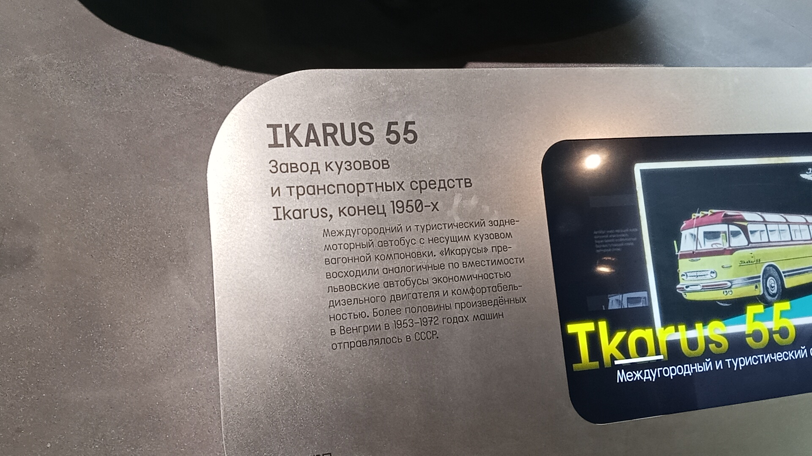
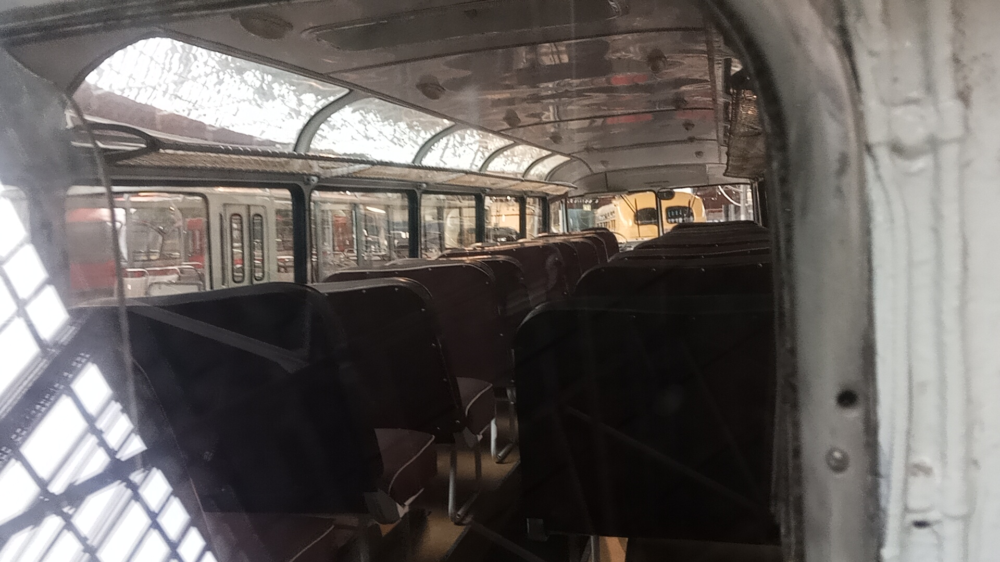

Ikarus 55 № 015
Перед вами легендарный венгерский междугородный и туристический автобус с несущим кузовом вагонной компоновки. Данный экземпляр (бортовой № 015) был выпущен в 1953 году и сейчас является частью коллекции Музея Транспорта Москвы.
Этот конкретный автобус примечателен тем, что в 1990-е годы он попал в Москву из Германии как гуманитарная помощь и использовался как транспорт для инвалидов, после чего был выкуплен и отреставрирован для музея.
Общая информация
| Параметр | Значение |
|---|---|
| Город | Москва 🇷🇺 |
| Транспортная компания | Музей Транспорта Москвы |
| Модель | Ikarus 55 |
| Бортовой № | 015 |
| Год выпуска | 1953 |
| Текущее состояние | Памятник / Музейный |
| Завод-изготовитель | Завод кузовов и транспортных средств Ikarus (Венгрия) |
Технические характеристики
Основные параметры
Длина: 11,4 м
Ширина: 2,5 м
Высота: 2,87 м
Снаряжённая масса: 9500 кг
Максимальная скорость: 98 км/ч
Расход топлива: около 30 л/100 км
Силовая установка
Двигатель: Csepel D-614, дизельный
Объём: 8,28 л
Цилиндры: 6, рядный
Мощность: 145 л.с.
КПП: 5-ступенчатая механическая
Расположение: заднее, в корме
История экспоната
Постройка
Именно эта машина (бортовой № 015) сошла с конвейера завода Ikarus в Венгрии.
Съёмки в музее
Автобус зафиксирован на фотографиях в Музее наземного городского пассажирского транспорта (Трамвайное депо имени Н.Э. Баумана).
Съёмки фильма «Дом солнца»
Автобус участвовал в съёмках фильма на площади Васильевский Спуск.
Выставки и мероприятия
Машину регулярно выставляли у Главного входа ВДНХ (2007, 2009, 2012), на Чистопрудном бульваре (2014) и на Фрунзенской набережной (2016).
Парад Мосгортранса
Принял участие в Параде ко Дню открытых дверей ГУП «Мосгортранс» на Большой Дорогомиловской улице.
Музей «Московский транспорт»
Автобус сфотографирован на территории музея по адресу улица Рогожский Вал.
Музей Транспорта Москвы
Экспонат доставлен в новое здание Музея Транспорта Москвы (Гараж Мельникова).
Особенности конструкции
Заднемоторная компоновка
Главная особенность «Икарус-55» — двигатель в корме, изолированный от пассажирского салона. Это решение было принято из-за шумного дизеля.
Несущий кузов
Вагонный тип кузова без отдельной рамы. Вдохновением для венгерских конструкторов послужил советский ЗИС-154.
Аэродинамичный дизайн
Вытянутая форма с обтекаемым профилем, за которую автобус получил прозвище «Сигара». Гребень на крыше — это воздухозаборник.
Комфорт для пассажиров
Версия «Люкс» для СССР оснащалась креслами с регулировкой наклона спинки, застеклёнными скатами крыши, хорошей вентиляцией.
Фотогалерея

📌 Музей Транспорта Москвы.
Легендарная венгерская «Сигара».

📌 Музей Транспорта Москвы.
Музейная информация об Ikarus 55.

📌 Музей Транспорта Москвы.
Салон музейного экспоната Ikarus 55.
Нажмите на фото для увеличения
«У нас на тесте модель, которую многие называют самым красивым автобусом времен СССР — "Икарус-55". За вытянутую форму он еще получил прозвище "сигара"».